Introdução à Aprendizagem Profunda — Atividade Prática Supervisionada (APS)
Implementação de Redes Convolucionais
Integrantes: (preencher com os nomes do grupo)
Repositório: (preencher com o link do GitHub)
Outubro de 2026
Implementamos em PyTorch uma CNN própria (MinhaCNN, 1,18 milhão de parâmetros, com Batch Normalization, dropout, weight decay, aumento de dados e label smoothing), treinada do zero, e a comparamos com a ResNet18 pré-treinada no ImageNet (11,2 milhões de parâmetros) no MNIST e no CIFAR-10.
Na atividade anterior implementamos um perceptron multicamadas (MLP). Um MLP trata a imagem como um vetor: cada pixel se liga a todos os neurônios da camada seguinte, a rede não sabe que pixels vizinhos estão relacionados e precisa reaprender o mesmo padrão em cada posição. As redes convolucionais (CNNs) resolvem isso com três ideias: conectividade local (cada neurônio olha uma pequena janela), compartilhamento de pesos (o mesmo kernel percorre a imagem inteira, então um detector de borda funciona em qualquer posição) e hierarquia (camadas mais profundas combinam padrões simples em padrões complexos, com o pooling aumentando o campo receptivo).
O objetivo deste trabalho é:
torchvision;| MNIST | CIFAR-10 | |
|---|---|---|
| Conteúdo | dígitos manuscritos 0–9 | objetos em 10 classes (avião, automóvel, pássaro, gato, cervo, cachorro, sapo, cavalo, navio, caminhão) |
| Imagens | 28×28, tons de cinza | 32×32, coloridas (RGB) |
| Treino / teste oficiais | 60.000 / 10.000 | 50.000 / 10.000 |
| Divisão usada (treino / validação / teste) | 55.000 / 5.000 / 10.000 | 45.000 / 5.000 / 10.000 |
| Fonte | Hugging Face ylecun/mnist (Parquet) |
Krizhevsky (2009), espelho oficial uoft-cs/cifar10 no Hugging Face |
As 5.000 imagens de validação foram sorteadas do treino oficial com semente fixa. A validação foi usada para acompanhar o treino e escolher o melhor checkpoint (early stopping por seleção de época); o conjunto de teste só foi usado uma vez, no final, para os números reportados.
O MNIST é um problema "fácil": fundo uniforme, objeto centralizado e normalizado em tamanho. O CIFAR-10 é bem mais difícil: imagens pequenas de objetos reais, com fundo variado, mudanças de pose, escala e iluminação, e classes visualmente próximas (gato x cachorro, automóvel x caminhão).
Usamos o espelho do CIFAR-10 no Hugging Face por ser muito mais rápido de baixar, mas também baixamos a versão binária original de Toronto e conferimos por hash que os dois contêm exatamente as mesmas 60.000 imagens e rótulos (o conjunto de teste é idêntico inclusive na ordem; o de treino está apenas em outra ordem).
A MinhaCNN segue o estilo VGG: três blocos com duas convoluções 3×3 cada, seguidas de max-pooling 2×2 e dropout espacial. O número de filtros dobra a cada bloco (64 → 128 → 256) enquanto a resolução cai pela metade. No final, um Global Average Pooling (GAP) resume cada mapa de características em um número, e uma pequena cabeça MLP — a mesma ideia da atividade anterior — faz a classificação. A mesma arquitetura é usada nos dois conjuntos; só muda o número de canais de entrada (1 no MNIST, 3 no CIFAR-10).
| Camada | Saída (CIFAR-10) | Saída (MNIST) | Parâmetros |
|---|---|---|---|
| Conv 3×3, 64 + BN + ReLU | 64×32×32 | 64×28×28 | 1.856 (704 no MNIST) |
| Conv 3×3, 64 + BN + ReLU | 64×32×32 | 64×28×28 | 36.992 |
| MaxPool 2×2 + Dropout2d (p=0,1) | 64×16×16 | 64×14×14 | 0 |
| Conv 3×3, 128 + BN + ReLU | 128×16×16 | 128×14×14 | 73.984 |
| Conv 3×3, 128 + BN + ReLU | 128×16×16 | 128×14×14 | 147.712 |
| MaxPool 2×2 + Dropout2d (p=0,1) | 128×8×8 | 128×7×7 | 0 |
| Conv 3×3, 256 + BN + ReLU | 256×8×8 | 256×7×7 | 295.424 |
| Conv 3×3, 256 + BN + ReLU | 256×8×8 | 256×7×7 | 590.336 |
| MaxPool 2×2 + Dropout2d (p=0,2) | 256×4×4 | 256×3×3 | 0 |
| Global Average Pooling | 256 | 256 | 0 |
| Linear 256→128 + BN + ReLU + Dropout (p=0,3) | 128 | 128 | 33.024 |
| Linear 128→10 | 10 | 10 | 1.290 |
| Total | 1.180.618 (1.179.466 no MNIST) |
O GAP no lugar de "achatar" o mapa 256×4×4 reduz muito o número de parâmetros da parte densa (33 mil em vez de mais de 500 mil) e já funciona como regularizador.
Para medir o efeito dessas técnicas, treinamos também uma ablação: a mesma MinhaCNN no CIFAR-10, com o mesmo número de épocas, mas sem aumento de dados, sem dropout, sem weight decay e sem label smoothing (mantivemos a BN, necessária para a estabilidade do treino).
Otimizador SGD com momento de Nesterov (0,9), lotes de 128 imagens e política de taxa de aprendizado One-Cycle (sobe até o máximo nos primeiros 25% do treino e depois decai suavemente), com precisão mista (fp16) para acelerar. A MinhaCNN foi treinada por 15 épocas no MNIST e 40 no CIFAR-10, com taxa máxima de 0,1.
Escolhemos a ResNet18 (He et al., 2016) com os pesos IMAGENET1K_V1 do torchvision. Ela usa conexões residuais (atalhos que somam a entrada de um bloco à sua saída), o que facilita o fluxo do gradiente e permite redes profundas. Entre as opções sugeridas, é a de melhor custo-benefício para a nossa GPU de 6 GB: a VGG16 tem 138 milhões de parâmetros e a ResNet50, 25 milhões, contra 11,2 milhões da ResNet18; a AlexNet é mais antiga e menos precisa no ImageNet.
Adaptação aos nossos dados: a imagem é ampliada por interpolação bilinear para 224×224 (a resolução em que a rede foi pré-treinada), o MNIST em tons de cinza é replicado nos 3 canais, aplica-se a normalização do ImageNet e a última camada (1000 classes) é trocada por uma nova camada linear 512→10. O aumento de dados é o mesmo da MinhaCNN, aplicado antes da ampliação.
Avaliamos três formas de usar a ResNet18:
Notebook com GPU NVIDIA GeForce RTX 3050 Laptop (6 GB), Windows 11, Python 3.11, PyTorch 2.7.1 com CUDA 12.6. Os dados ficam inteiros na memória da GPU e o aumento de dados é feito em lote na própria GPU, o que elimina o gargalo de carregamento.
| Dataset | Modelo | Parâmetros (treináveis) | Épocas | Acurácia teste | F1 macro | Acc. treino | Gap | Tempo de treino | Inferência (img/s) |
|---|---|---|---|---|---|---|---|---|---|
| MNIST | MinhaCNN | 1,18 M | 15 | 99,66% | 0,9966 | 99,82% | 0,2 p.p. | 2,1 min | 25.064 |
| MNIST | ResNet18 (fine-tuning) | 11,18 M | 3 | 99,53% | 0,9953 | 99,71% | 0,2 p.p. | 5,8 min | 1.573 |
| MNIST | ResNet18 (extração) | 11,18 M (5.130) | 5 | 96,31% | 0,9627 | 96,59% | 0,3 p.p. | 3,8 min | 1.571 |
| CIFAR-10 | MinhaCNN | 1,18 M | 40 | 92,43% | 0,9240 | 98,16% | 5,7 p.p. | 6,1 min | 19.235 |
| CIFAR-10 | ResNet18 (fine-tuning) | 11,18 M | 5 | 95,46% | 0,9545 | 98,68% | 3,2 p.p. | 8,0 min | 1.567 |
| CIFAR-10 | ResNet18 (extração) | 11,18 M (5.130) | 5 | 86,97% | 0,8691 | 88,55% | 1,6 p.p. | 2,8 min | 1.568 |
| CIFAR-10 | ResNet18 do zero | 11,18 M | 5 | 86,92% | 0,8686 | 89,62% | 2,7 p.p. | 7,9 min | 1.568 |
| CIFAR-10 | MinhaCNN sem regularização | 1,18 M | 40 | 86,17% | 0,8616 | 100,00% | 13,8 p.p. | 6,0 min | 19.043 |
Acc. treino é a acurácia no conjunto de treino sem aumento de dados nem dropout, e Gap é a diferença entre ela e a acurácia de teste (medida de overfitting). Tempos medidos na RTX 3050 Laptop; inferência em lotes de 256 imagens com fp16.
Com 10.000 imagens de teste, o intervalo de confiança de 95% da acurácia é de cerca de ±0,1 ponto percentual (p.p.) no MNIST e ±0,5 p.p. no CIFAR-10. Para comparar os modelos usamos o teste de McNemar, que olha as imagens em que um modelo acerta e o outro erra: no CIFAR-10, das imagens em que só um dos dois acerta, 479 são acertos só da ResNet18 e 176 só da MinhaCNN (p < 0,001: diferença significativa); no MNIST, são 24 acertos só da MinhaCNN contra 11 só da ResNet18 (p = 0,041: diferença significativa ao nível de 5%, embora pequena em termos absolutos).
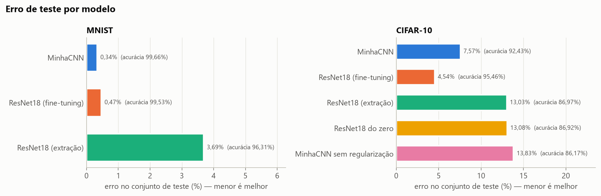
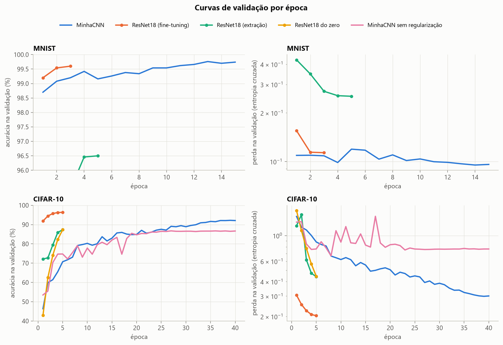
A ResNet18 pré-treinada atinge 91,8% de validação no CIFAR-10 após uma única época, enquanto a MinhaCNN leva cerca de 25 épocas para chegar a 87%. A ResNet não está aprendendo a "ver" do zero: ela só reajusta características que já sabe extrair. A MinhaCNN ainda estava melhorando no fim do treino (melhor época: 39 de 40).
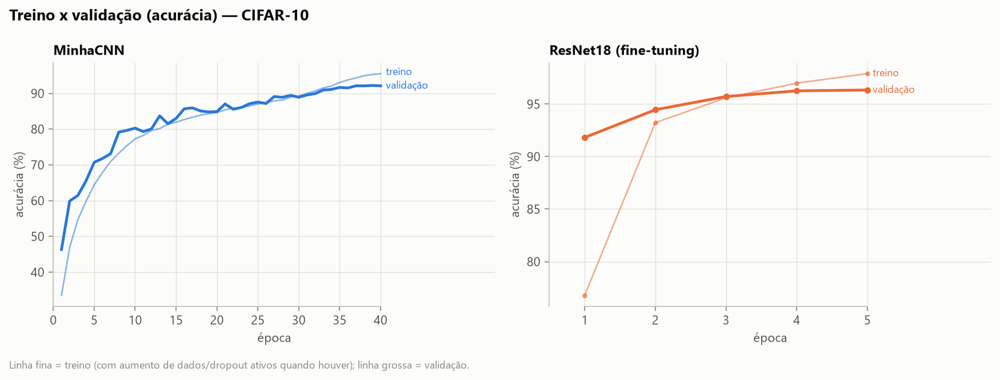
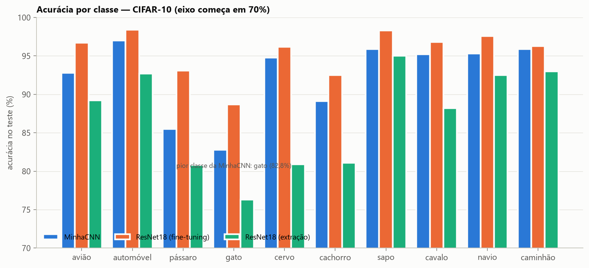
As redes têm o mesmo padrão de dificuldade: gato, pássaro e cachorro são as classes mais difíceis e os veículos, as mais fáceis. A maior vantagem da ResNet18 está justamente nos animais — pássaro (+7,6 p.p.), gato (+5,9 p.p.) e cachorro (+3,4 p.p.) —, enquanto em automóvel e caminhão a diferença é de 0,4 a 1,4 p.p. Não é coincidência: o ImageNet tem centenas de classes de animais (só de raças de cachorro são mais de cem), então a ResNet chega ao CIFAR-10 já sabendo distinguir pelagem, focinho e orelhas.
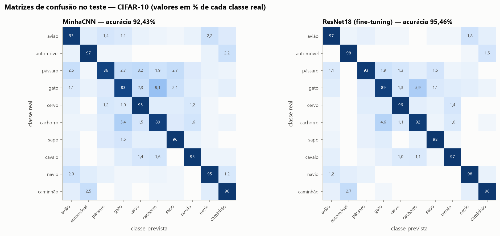
A confusão dominante é gato → cachorro (9,1% dos gatos na MinhaCNN) e, no sentido contrário, cachorro → gato; em seguida vêm automóvel ↔ caminhão e avião ↔ navio (fundos de céu e de água parecidos).
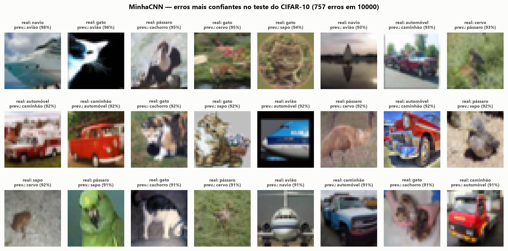
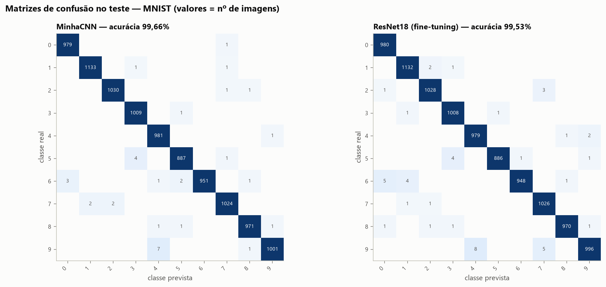
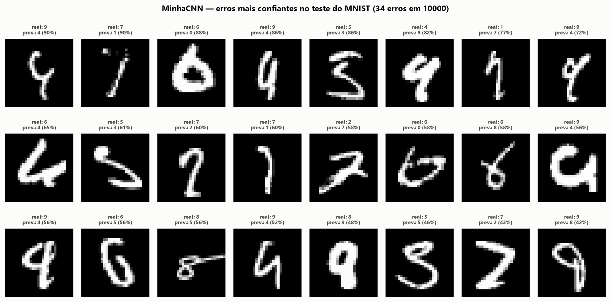
No MNIST as redes erram só 34 (MinhaCNN) e 47 (ResNet18 com fine-tuning) das 10.000 imagens de teste. Boa parte dos erros restantes são dígitos mal escritos ou com rótulo discutível, então há pouco espaço real para melhoria.
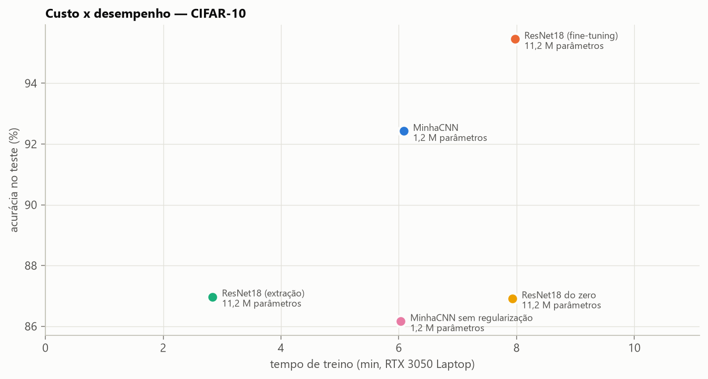
Por época, a ResNet18 a 224×224 é cerca de 10× mais lenta que a MinhaCNN (91 s contra 9 s) e, na inferência, 12× mais lenta. Como converge em poucas épocas, o tempo total de treino acaba parecido (8,0 contra 6,1 minutos), mas o custo de usar o modelo continua 12× maior. A ampliação de 32×32 para 224×224 multiplica por 49 o número de pixels processados.
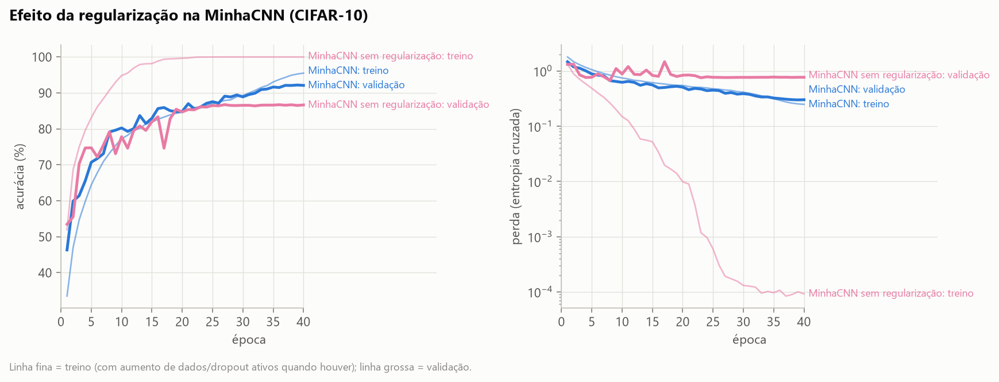
| MinhaCNN no CIFAR-10 | Acurácia de teste | Acurácia de treino | Gap | Perda de teste |
|---|---|---|---|---|
| Com regularização | 92,43% | 98,16% | 5,7 p.p. | 0,303 |
| Sem regularização | 86,17% | 100,00% | 13,8 p.p. | 0,765 |
Sem regularização a rede memoriza o treino em ~20 épocas e deixa de generalizar: a perda de teste fica 2,5× maior e a acurácia cai 6,3 p.p. A regularização reduziu o gap a menos da metade e rendeu mais do que a diferença entre a MinhaCNN e a ResNet18.
1. O pré-treino é a principal vantagem da ResNet18 no CIFAR-10. A ResNet18 viu 1,28 milhão de imagens do ImageNet antes do CIFAR-10; a MinhaCNN viu só 45 mil. O experimento de controle isola esse efeito: a mesma ResNet18, na mesma resolução e com o mesmo número de épocas, mas partindo de pesos aleatórios, ficou em 86,92%, contra 95,46% com pré-treino. Não é a arquitetura nem o tamanho da rede que explicam a diferença — é o conhecimento transferido. As camadas iniciais aprendidas no ImageNet (bordas, cores, texturas) são genéricas e servem para qualquer imagem natural (Yosinski et al., 2014); só as finais precisam ser reajustadas.
2. Extração de características x fine-tuning. Congelando o backbone e treinando só a última camada, a ResNet18 obteve 86,97% no CIFAR-10 e 96,31% no MNIST. A extração de características fica 8,5 p.p. abaixo do fine-tuning no CIFAR-10 e 3,2 p.p. abaixo no MNIST. As características do ImageNet já separam razoavelmente animais e veículos, mas foram aprendidas em fotos coloridas de alta resolução, não em traços de dígitos ampliados de 28×28 — por isso o MNIST é o que mais precisa que o backbone seja reajustado. Mesmo treinando só 5.130 parâmetros (a camada final), a extração chega a 86,97% no CIFAR-10, abaixo da MinhaCNN treinada do zero; o fine-tuning completo, que adapta também as camadas intermediárias, é o que leva a ResNet18 além da MinhaCNN.
3. O CIFAR-10 se parece com o ImageNet; o MNIST, não. As classes do CIFAR-10 (animais e veículos) existem no ImageNet, e por isso o ganho do pré-treino é maior justamente nos animais (seção 4.3). Dígitos brancos sobre fundo preto não se parecem com fotos: no MNIST o pré-treino não trouxe vantagem, e a MinhaCNN, menor e treinada direto na resolução original, foi até ligeiramente melhor que a ResNet18.
4. Capacidade e resolução. A ResNet18 tem 9,5× mais parâmetros, 18 camadas com atalhos residuais e processa a imagem ampliada para 224×224. A ampliação não cria informação nova, mas casa a escala dos objetos com a que os filtros pré-treinados esperam. O preço é o custo: 12× mais lenta na inferência.
5. O MNIST está saturado. Com erros abaixo de 0,5%, as diferenças entre modelos são de poucas dezenas de imagens (p = 0,041 entre MinhaCNN e ResNet18, no limite da significância). O que sobra são dígitos ambíguos, que nenhuma arquitetura resolve.
6. Viés indutivo da convolução e regularização. Mesmo pequena, a MinhaCNN chega a 92% no CIFAR-10 — bem acima do que um MLP costuma atingir nesse conjunto (na faixa de 50–60%) — porque a convolução embute duas suposições corretas sobre imagens: padrões são locais e podem aparecer em qualquer posição. Mas, treinada do zero em poucos dados, ela depende de regularização forte para não decorar o treino (seção 4.6).
As propostas abaixo estão ordenadas pelo que esperamos ser a melhor relação ganho/esforço no CIFAR-10 (no MNIST há pouco espaço: o erro já está perto do limite de rótulos ambíguos).
Usamos cinco técnicas complementares (todas em src/activations.py): (1) os pesos da primeira camada, (2) os mapas de ativação de cada bloco para uma imagem, (3) a maximização de ativação — sintetizar, por gradiente ascendente, a imagem que mais excita um canal (Erhan et al., 2009) —, (4) as imagens reais do teste que mais ativam cada canal (Zeiler e Fergus, 2014) e (5) o Grad-CAM, que mostra quais regiões pesaram na decisão (Selvaraju et al., 2017).
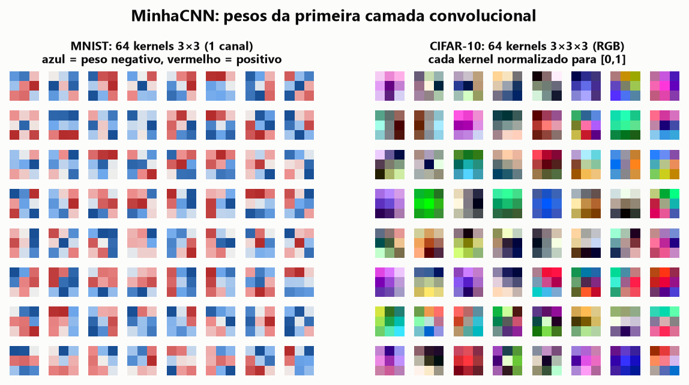
Kernels 3×3 são pequenos demais para mostrar formas, mas o padrão é claro: no MNIST, quase todos combinam pesos positivos (vermelho) e negativos (azul) em lados opostos — respondem à transição claro/escuro de uma borda numa direção específica. No CIFAR-10, parte dos kernels responde a cores (verde, magenta, azul) e parte a contrastes de luminosidade.
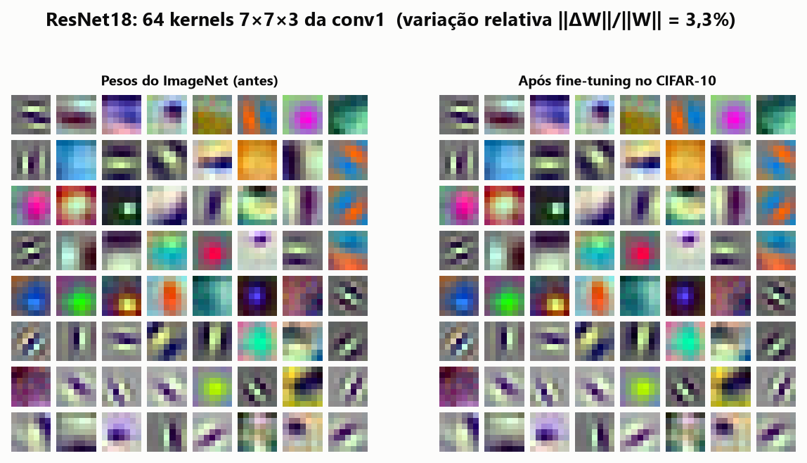
Os kernels 7×7 da ResNet18 mostram o resultado clássico: filtros de bordas orientadas parecidos com filtros de Gabor e detectores de cores oponentes (verde × magenta, azul × amarelo) — o mesmo tipo de detector encontrado no córtex visual primário. Após o fine-tuning, eles mudaram só 3,3% (norma relativa): as primeiras camadas são genéricas e quase não precisam de ajuste, o que explica por que o pré-treino transfere tão bem.
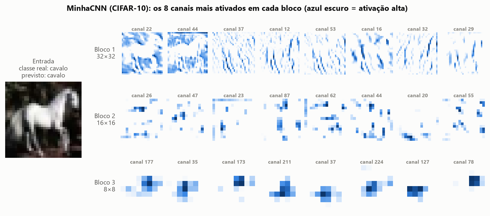
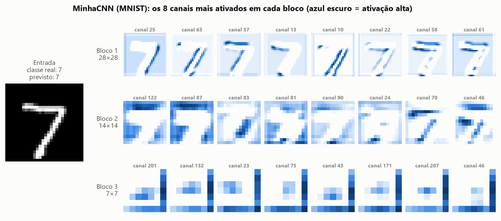
Vemos a hierarquia típica das CNNs: o bloco 1 funciona como um banco de detectores de bordas (cada canal acende para uma orientação — no "7", um canal pega só o traço horizontal, outro só a diagonal); conforme a resolução cai, as ativações ficam mais esparsas e abstratas, e no bloco 3 cada canal responde a uma região do objeto. Um efeito curioso no MNIST: vários canais do bloco 3 respondem à borda da imagem. O zero-padding das convoluções deixa a borda "visível" para a rede, que a usa como referência de posição — fenômeno descrito por Islam et al. (2020).
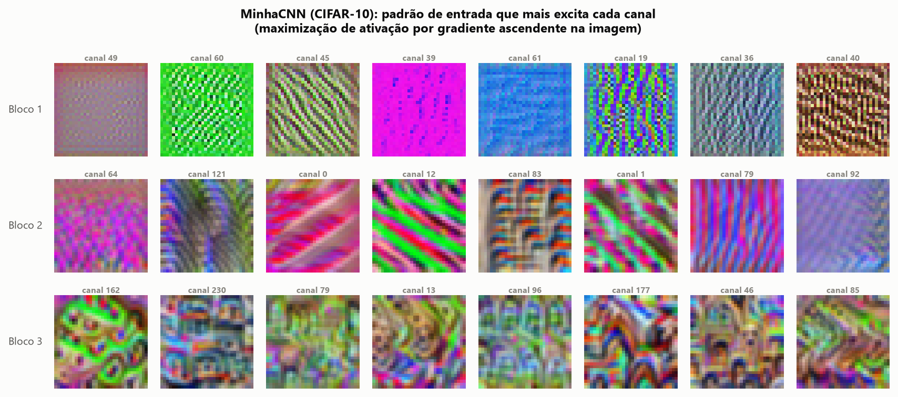
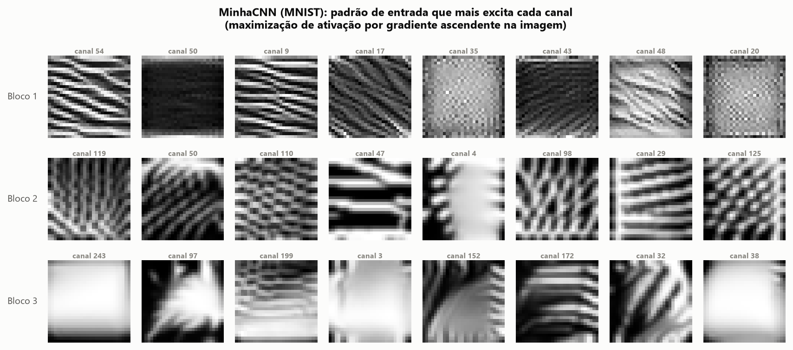
Partindo de ruído, ajustamos os pixels da imagem para maximizar a ativação média de um canal (antes da ReLU), com regularização de suavidade (variação total, desfoque e pequenos deslocamentos aleatórios) para obter padrões legíveis. A complexidade cresce com a profundidade: no bloco 1 os canais querem só uma cor ou uma orientação de borda; no bloco 2, listras curvas e texturas; no bloco 3, padrões mais elaborados que lembram partes de objetos.
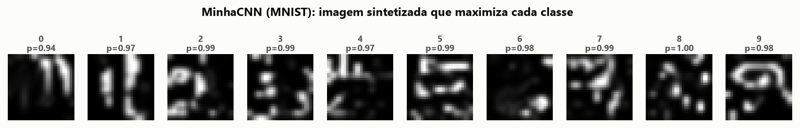
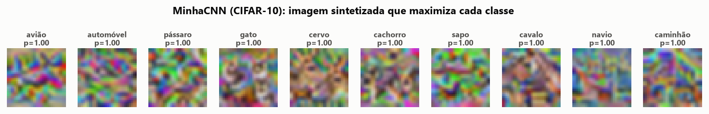
Quando maximizamos a saída de cada classe, alguns traços aparecem (um traço vertical para o "1", um laço para o "9", tons de pelagem marrom para cervo e cavalo), mas a rede atinge 98–100% de confiança com imagens que não se parecem com os objetos. Isso mostra que a rede decide com base em combinações de texturas e partes locais, e não numa "forma global" como nós — a mesma fragilidade explorada pelos exemplos adversariais.
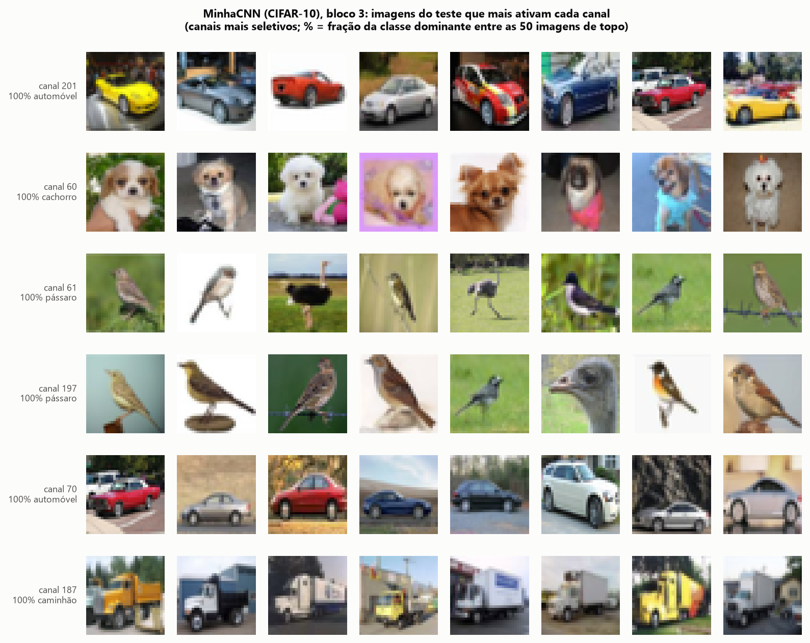
Esta é a visualização mais interpretável. Para cada um dos 256 canais do bloco 3 pegamos as 50 imagens de teste com maior ativação e medimos a fração que pertence à classe mais comum. Os 6 canais mostrados têm 100% das 50 imagens de uma mesma classe — o canal 60, por exemplo, responde a rostos de cachorro vistos de frente; o 201 e o 70, a carros (de frente e de lado); o 187, a caminhões. Na média dos 256 canais, 75,8% das imagens de topo são da mesma classe. A rede nunca recebeu a instrução "detecte rostos de cachorro" — só os rótulos das imagens —, mas aprendeu sozinha detectores de partes e de objetos no último bloco.
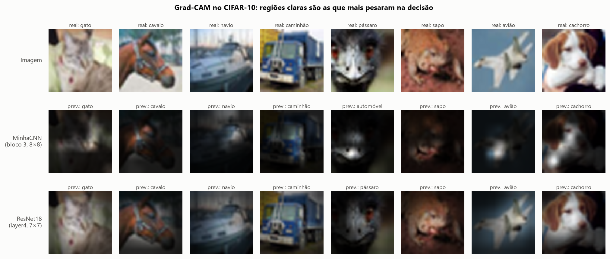
O Grad-CAM pondera os mapas do último bloco pelo gradiente da classe prevista. A MinhaCNN baseia a decisão em regiões pequenas e muito discriminativas — o olho e o cabresto do cavalo, o focinho do cachorro, o corpo do avião —, enquanto a ResNet18 distribui a atenção pelo objeto inteiro (o gato todo, o corpo do sapo). No pássaro (um avestruz de frente), a MinhaCNN olhou só o bico, que lembra uma grade de carro, e errou para "automóvel"; a ResNet18, olhando a cabeça inteira, acertou. Depender de poucas pistas locais torna a rede menor mais frágil a oclusões e fundos enganosos, e é coerente com o que vimos na maximização de classes.
A CNN implementada pelo grupo, com 1,18 milhão de parâmetros e treinada do zero em ~6 minutos, atingiu 99,66% no MNIST e 92,43% no CIFAR-10. A ResNet18 pré-treinada no ImageNet ficou ligeiramente atrás no MNIST (99,53%) e foi melhor no CIFAR-10 (95,46%), com a vantagem concentrada nas classes de animais. Os experimentos de controle mostram que essa vantagem vem do conhecimento transferido do ImageNet, e não da arquitetura em si: a mesma ResNet18 sem pré-treino ficou em 86,92%. Em contrapartida, a MinhaCNN é 9,5× menor e 12× mais rápida na inferência, e a regularização foi essencial para ela (+6,3 p.p. no CIFAR-10).
As visualizações confirmam a teoria vista em aula: as CNNs aprendem uma hierarquia de características — bordas e cores, depois texturas e partes, e por fim detectores de objetos — e as primeiras camadas são tão genéricas que quase não mudam no fine-tuning. Os caminhos mais promissores para melhorar a MinhaCNN são treinar por mais tempo com aumento de dados mais forte, adicionar conexões residuais e usar destilação a partir da própria ResNet18.
Todo o código está no repositório do grupo (link). Estrutura principal:
| Arquivo | Função |
|---|---|
run_all.py |
executa todos os experimentos em sequência e gera as figuras |
download_data.py |
baixa MNIST e CIFAR-10 para data/raw/ |
src/data.py |
leitura dos dados, divisão treino/validação/teste, aumento de dados na GPU |
src/models.py |
MinhaCNN e ResNet18 (torchvision) |
src/train.py |
treino e avaliação de um experimento (linha de comando) |
src/plots.py |
gráficos e tabela-resumo (results/resumo.csv) |
src/activations.py |
desafio: kernels, mapas de ativação, maximização de ativação, Grad-CAM |
src/make_report.py |
gera este relatório em DOCX e PDF a partir do Markdown |
Para reproduzir: pip install -r requirements.txt, depois python download_data.py e python run_all.py (cerca de 1 hora numa RTX 3050 Laptop). Cada experimento grava em results/<nome>/ o histórico por época (history.json), as métricas finais (metrics.json) e as previsões no teste (test_preds.npz); os logs ficam em logs/. As sementes aleatórias são fixas, mas o uso de cudnn.benchmark e de precisão mista pode causar variações pequenas (da ordem de décimos de ponto percentual) entre execuções.